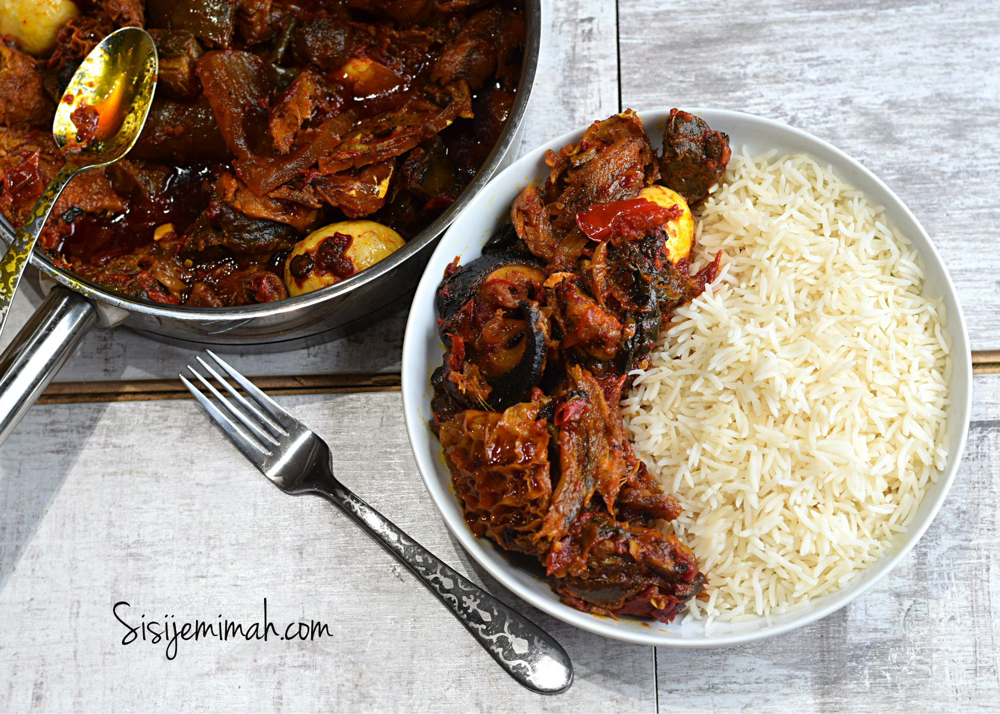

Locust Bean Stew Recipe
Home

Description
Locust Beans Stew also known as Obe Ata Iru is one of my favorite Yoruba Style Fred Stew recipes. It’s very versatile and can be eaten with pretty much anything, well, excluding “Swallow”.
Ingredients
- 4 Big Bell Peppers (Tatashe)
- 2-3 Scotch Bonnet Peppers (Ata Rodo)
- 1.5 Onions
- Assorted Meats (Boiled and Fried)
- 1 Cup Palm Oil
- 1 Cooking Spoon Locust Beans (Iru)
- Smoked Fish (Shredded)
- Stock fish (Shredded)
- 1 Cooking Spoon Crayfish Powder
- Boiled Eggs
- 2 Knorr Chicken Cubes
Salt to taste
Steps/Method
- Blend the Bell Peppers, Scotch Bonner and 1 Onion coarsely, then set aside.
- Pour the Palm oil into a saucepan, then place on medium heat. When the Oil heats up, add 1/2 chopped onions. Fry for 2 minutes..
- After 2 minutes, add the Locust Beans. Fry for a further 2 minutes..
- Then add the Blended Pepper..
- Also add the Crayfish, Stock Cubes and Salt to taste..
- Fry for 20 minutes, making sure you stir from time to time to prevent burning..After 20 minutes, the Oil would have settled well on the top of the Stew..
- Now, add the Shredded Fish, stir, Then add the fried meats, combine thoroughly…
- Also add the Boiled eggs..
- Turn the heat down to LOW, then leave to fry for an hour.
- Your Locust Beans Stew is ready.